Agent Harness Anatomy #6: OpenHands — the event-sourced agent SDK
Series: Agent Harness Anatomy — top-down dissections of real agent harnesses, grounded in verifiable source code. Every behavioral claim below carries a footnote to a pinned GitHub permalink; the full evidence lives in the endnotes.
Version block
- Repo: OpenHands/software-agent-sdk
- Pinned: tag
v1.53.0→54daf056bd863bb46f922a2fe9324dd736b37ff6(2026-10-05) - Language: Python (uv workspace; TypeScript client alongside)
- License: MIT
- Claim under test: "a clean, modular SDK for building AI agents with OpenHands V1"
A scope correction before anything else: if you go looking for the agent at
OpenHands/OpenHands, you will find Agent Canvas — a control center for
running other agents (Claude Code, Codex, Gemini, ACP agents).1 The
org renamed All-Hands-AI to OpenHands, and the old agent repo pivoted.
The event-driven harness this series set out to dissect — the event bus,
the microagents, the loop — moved to software-agent-sdk, released the
morning of this analysis. Everything below is pinned to that repo.
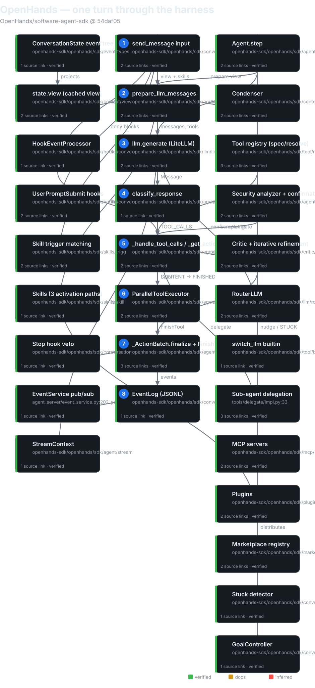
Explore the interactive architecture diagram Pan, zoom, and click any node for its source module referenceThe mental model
OpenHands is not a CLI with a loop bolted on. It is an event-sourced agent
SDK: everything that happens — user messages, tool calls, tool results,
errors, hook decisions, condensation, interrupts — is a typed event in a
persistent tree, and the model never sees the raw stream. It sees a cached,
incrementally maintained view with enforced invariants (observation
uniqueness, tool-call matching, batch atomicity).2 The loop itself is
almost boring: LocalConversation._run → Agent.step → classify the
response (tool calls? content? reasoning only? empty?) → run the tool batch
→ feed observations back → repeat until finished.3 All the interesting
machinery attaches to the event stream, not the loop: hooks are an
event-stream interceptor that wraps the on_event callback,4 the critic
scores events and can veto termination,5 the agent-server fans events
over pub/sub to REST and WebSocket clients.6
The governing tradeoff: OpenHands buys uniformity at the cost of indirection. One event type system serves the loop, the hooks, the persistence layer, the streaming protocol, and the server fan-out — so every subsystem speaks the same language, but nothing is a direct function call and the "simple" path through the code always passes through the stream. If you're building a harness, that's OpenHands' thesis in one sentence: make the event log the substrate, and let the loop be dumb.
Package map
The repo is a uv-workspace monorepo. Four Python packages matter:7
| Package | Role | Size |
|---|---|---|
openhands-sdk |
The harness core: loop, events, conversation, LLM, tools, hooks, skills, security, context/condenser, MCP, critic, marketplace, extensions, automation | 303 files, ~77k lines |
openhands-tools |
Built-in tool implementations (terminal, file_editor, delegate, browser_use, …) |
93 files, ~17k lines |
openhands-workspace |
Workspace implementations (local/remote/git execution environments) | 14 files, ~3k lines |
openhands-agent-server |
Server runtime: REST/WebSocket API, conversation orchestration, event service, sandbox lifecycle | 89 files, ~33k lines |
Plus clients/typescript/ — a browser-compatible client mirroring the
agent-server API. Line counts include blanks and comments; they are
order-of-magnitude, not precision instruments.
The dependency direction is enforced by design: the SDK never imports
openhands-tools. A Tool in the SDK is a spec — a wire contract with a
name and parameters — resolved to implementations at runtime through a
registry.8 The core can be embedded without dragging any tool
implementation along.
The event bus and the view
This section is earned: the pi template's "core loop" section cannot hold this material, because hooks, streaming, persistence, and the server fan-out all attach to the event stream, not the loop.
There are five event types and nothing else:
EventType = Literal["action", "observation", "message", "system_prompt", "agent_error"],
with sources agent, user, environment, or hook.9 Events form a
tree (parent_id, root sentinel "__root__").10 The base class is
abstract; LLMConvertibleEvent marks the ones renderable into model
messages: ActionEvent (a tool call — payload, thought, reasoning, tool
name, call id, security risk, summary, critic result), MessageEvent,
ObservationEvent (a tool result; UserRejectObservation when the user or
a hook denied it; AgentErrorEvent when a tool raised), and
SystemPromptEvent.11 Everything else rides alongside but never reaches
the model: Condensation / CondensationRequest /
CondensationSummaryEvent, ConversationStateUpdateEvent,
HookExecutionEvent, LLMCompletionLogEvent, StreamingDeltaEvent,
TokenEvent, InterruptEvent, PauseEvent, ACPToolCallEvent.12
Producers and consumers: the agent emits action/message/observation/error
events through the on_event callback (which persists and broadcasts);
tools produce observations; hooks produce HookExecutionEvents; user
actions produce interrupts and pauses; the condenser produces condensation
events.13 The conversation's state.view incrementally maintains the
LLM-visible projection of that stream — a cached view object, not a
re-render, with a code comment referencing the design issue.14 View
properties enforce invariants on what the model is allowed to see:
observation uniqueness, tool-call matching, batch and tool-loop
atomicity.15
Two consequences fall out of this design. First, hooks are stream
interceptors, not loop gates. HookEventProcessor wraps on_event, so a
hook sees every event as it flows and can act on it — PreToolUse fires
when an ActionEvent passes through; denying marks the action blocked in
state, and the batch executor partitions it out and emits a
UserRejectObservation with rejection_source="hook" instead of
executing.16 Second, streaming is slot-minting. StreamContext
mints event IDs for streamed items so clients can retire slots;
StreamingDeltaEvent carries the deltas; token IDs become TokenEvents
when the provider returns them.17
The tradeoff of event-sourcing everything: the log is the single source of
truth for the loop, the UI, the persistence layer, and the server — but the
event schema is the de-facto API contract, and every new event type is a
versioning decision. OpenHands chose the substrate pi only used for
rendering (pi's AgentEvent stream feeds the TUI; here it feeds the
loop), and paid for it in indirection.
The core loop
Two functions, sync and async twins: LocalConversation.run() /
arun() drive _run() / _arun(), each a while True: loop holding the
conversation state lock.18 The loop body, quoted from _run
(local_conversation.py:1917):
while True:
with self._state:
if self._state.execution_status in [PAUSED, STUCK]:
break
# Handle stop hooks on FINISHED
if self._state.execution_status == FINISHED:
if self._hook_processor is not None:
should_stop, feedback = self._hook_processor.run_stop(
reason="agent_finished"
)
if not should_stop:
# ...inject feedback as an environment message...
self._state.execution_status = RUNNING
continue
break
if self._check_stuck_or_nudge():
continue
# ...clear WAITING_FOR_CONFIRMATION after user approval...
try:
self.agent.step(self, on_event=self._on_event, on_token=self._on_token)
finally:
...
iteration += 1
if ... WAITING_FOR_CONFIRMATION: break
if budget exceeded: emit MaxBudgetReached; break
if iteration >= self.max_iteration_per_run: # default 500
emit ConversationErrorEvent(code="MaxIterationsReached"); break
Termination conditions, exhaustively: FINISHED (and the stop hooks allow
it — a Stop hook can deny and flip the status back to RUNNING, with a
documented race: clients must treat FINISHED as a hint, not a
guarantee),19 PAUSED, STUCK, WAITING_FOR_CONFIRMATION, budget
exceeded, max_iteration_per_run (default 500) → MaxIterationsReached,
or an error.20 Interrupts cancel the tracked run task; asyncio
cancellation propagates through the LLM stream into the agent step and out
to the loop, landing in PAUSED with an InterruptEvent.21
Agent.step() (agent.py:693, async twin astep at 898) does one model
round-trip plus tool execution:22
- Pending (unconfirmed) actions execute first — confirmation mode queues
actions and the next step runs them (
ConversationState.get_unmatched_actions). - A hook-blocked user message (
UserPromptSubmitdeny) →FINISHED, skip. prepare_llm_messages(state.view, condenser, llm)builds the model input from the cached view — never from the raw event list.23Condensationshort-circuits; non-multimodal image handling.llm.generate(...)withadd_security_risk_prediction=True— the model is asked to self-label each action's security risk.24- Malformed function call → user-role error
MessageEvent, loop continues. Content-policy violation → deterministic nudge, loop continues.LLMMalformedConversationHistoryError→ condensation recovery.LLMContextWindowExceedError→CondensationRequestevent (if the condenser handles requests) else raise.25
Response dispatch is a pure function — no side effects, no logging, no mutation:26
def classify_response(message: Message) -> LLMResponseType:
"""Decision priority (first match wins):
1. TOOL_CALLS — message contains tool calls
2. CONTENT — message contains non-blank TextContent
3. REASONING_ONLY — message has reasoning but no visible content
4. EMPTY — nothing useful
"""
TOOL_CALLS → _handle_tool_calls: each call is validated and normalized
(_get_action_event, agent.py:1311) — argument parsing, tool lookup,
Pydantic validation, security-risk extraction, critic evaluation — then the
confirmation gate (_requires_user_confirmation), then _execute_actions.
The async path runs each tool in its own thread via run_in_executor +
asyncio.gather (parallel_executor.py, bounded by
tool_concurrency_limit).27 CONTENT → _handle_content_response:
emit a MessageEvent, status FINISHED ("awaits user input").
REASONING_ONLY / EMPTY → emit plus a corrective nudge from
source="environment".28
Finish semantics live in _ActionBatch.finalize (agent.py:380): a
FinishTool action truncates the batch (later calls in the same batch are
discarded), and either the iterative-refinement check injects a followup
user message (keeping the loop going) or the status flips to
FINISHED.29
Note the deliberate absence of a turn counter in the pi sense: OpenHands
does cap iterations (500 per run), unlike pi's trust-the-model design —
but the cap is generous and the budget is the tighter bound in practice.
The GoalController (conversation/goal/controller.py:78) is not the
main loop: it is the transport-agnostic brain of the /goal loop — after
each agent run, an LLM judge (goal/judge.py) scores completion and
returns GoalContinue (followup prompt) or GoalDone (complete/capped),
driven by sync run_goal or an async agent-server task.30
The critic and iterative refinement
This section is earned: none of the other five harnesses has a post-hoc quality judge wired into termination, and it changes what "finish" means.
A critic scores the quality of the agent's work from its events (plus an
optional git patch) and returns a CriticResult:
CriticBase.evaluate(events, git_patch) (critic/base.py:83).31 Two
evaluation modes: finish_and_message (evaluate on FinishAction and
agent messages; the default) versus all_actions (every action; slow).
Implementations include AgentFinishedCritic, EmptyPatchCritic,
PassCritic, and an API critic with a rubric taxonomy
(critic/impl/api/).32 The critic also scores individual tool calls
during dispatch: _get_action_event calls _evaluate_with_critic when
_should_evaluate_with_critic(action) (critic_mixin.py), and the result
rides on the ActionEvent itself.33
The loop integration is the interesting part. With iterative_refinement
configured, _ActionBatch.finalize calls check_iterative_refinement
after FinishTool: score below threshold → inject a followup prompt as a
user-role MessageEvent and keep the loop going instead of setting
FINISHED.34 Termination is no longer "the model said it's done" — it's
"the model said it's done and the critic agrees." The failure mode this
invites is obvious: a harsh critic and a compliant model can orbit each
other indefinitely, bounded only by the iteration cap and the budget. That
is the price of judging your own homework inside the loop.
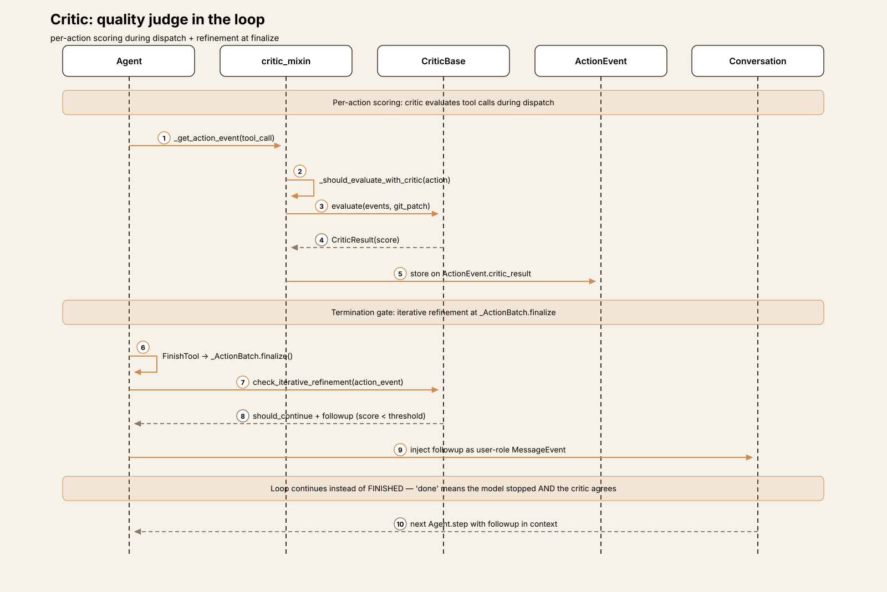
One turn, end to end
Trace: the user sends fix the failing test in tests/test_auth.py to a
LocalConversation.
① Input. LocalConversation.send_message() (local_conversation.py:1807)
resets FINISHED/STUCK to IDLE, runs UserPromptSubmit hooks through
HookEventProcessor.on_event — a deny blocks the message entirely — then
matches skill triggers (agent_context.get_user_message_suffix; matched
names recorded in state.activated_knowledge_skills), and emits the user
MessageEvent before entering run().35 A blocked message surfaces in
_step via state.pop_blocked_message → FINISHED, skipping processing:
the hook veto happens before the model is ever consulted.36
② Prompt assembly. prepare_llm_messages(state.view, condenser, llm)
(agent/utils.py:564) builds the model input from the cached incremental
view — the raw event list is never serialized directly.37 The system
prompt carries AgentContext._resolve_dynamic_data() output, including the
<available_skills> block listing every AgentSkills-format skill (name,
description truncated to 1024 chars per the AgentSkills spec, location),
so the model knows what it can read on demand.38 Tool declarations come
from the registry: SDK builtins (finish, think, switch_llm,
invoke_skill, …) plus the default exec set (terminal, file_editor,
task_tracker), resolved to implementations at runtime.39
③ Model call. Agent._step calls llm.generate(messages, tools,
add_security_risk_prediction=True, on_token=stream.token_callback).
LLM is a frozen Pydantic model wrapping LiteLLM
(litellm.completion/acompletion); it dispatches between Chat
Completions and the Responses API per model (uses_responses_api).40
The add_security_risk_prediction flag asks the model to self-label each
action's security risk — the first of three cooperating safety
mechanisms.41
④ Response parsing. classify_response sees tool calls (say,
terminal to run pytest, file_editor to view the test) →
TOOL_CALLS.26 Had the model answered in prose, CONTENT would emit a
MessageEvent and finish the turn ("awaits user input"); reasoning-only or
empty responses get a corrective nudge from source="environment" and the
loop continues.28
⑤ Tool dispatch. _handle_tool_calls runs each call through
_get_action_event (agent.py:1311): argument parsing →
normalize_tool_call (aliasing/terminal fallback) → tool lookup →
Pydantic validation → security-risk extraction → critic evaluation — then
emits the ActionEvent via on_event.42 As the event flows through
HookEventProcessor, PreToolUse hooks fire; a deny marks the action
blocked in state (state.block_action(event.id, reason)).43 Then the
confirmation gate: _requires_user_confirmation (agent.py:1130) checks
the ConfirmationPolicy (AlwaysConfirm / NeverConfirm /
ConfirmRisky(threshold)) against per-action risks from the
SecurityAnalyzerBase — LLMSecurityAnalyzer, PolicyRailSecurityAnalyzer
(deterministic rails), EnsembleSecurityAnalyzer, or the third-party
GraySwanAnalyzer.44 Without a configured analyzer, risk is always
UNKNOWN and the model's own security_risk label is ignored — the
self-label is advisory input to the analyzer, never a decision.45 If
confirmation is required, status becomes WAITING_FOR_CONFIRMATION and the
loop breaks awaiting the user; the next run() executes the pending
actions as implicit confirmation.46
⑥ Feedback. _execute_actions → _ActionBatch.prepare: truncate the
batch at FinishTool (later calls discarded), partition out hook-blocked
actions (emitting UserRejectObservation with
rejection_source="hook"), and execute the rest through
ParallelToolExecutor bounded by tool_concurrency_limit — the async path
runs each tool in its own thread (run_in_executor + asyncio.gather).
ObservationEvents are emitted in original call order even though
execution was parallel.47 A tool raising ValueError becomes an
AgentErrorEvent so the model can self-correct; malformed arguments get
fix_malformed_tool_arguments before validation fails.48
⑦ Termination. Say the model then calls finish. _ActionBatch.finalize
(agent.py:380) runs the iterative-refinement check: if the critic scores
the work below threshold, a followup prompt is injected as a user-role
message and the loop continues; otherwise status flips to FINISHED.34
Back in _run, the Stop hooks get their word — deny flips back to
RUNNING with the feedback injected as an environment message — and only
then does the loop break.19
⑧ Rendering. Every event emitted through on_event fans out: the
EventLog appends it as JSONL under the conversation directory
(thread/process-safe, conversation/event_store.py:34),49 and in server
mode the EventService publishes it over pub/sub to REST/WebSocket
clients, with StreamContext minting event IDs so streaming slots can be
retired.50 There is no privileged renderer — the TUI, the web client,
and the TypeScript client all consume the same event stream.
The tradeoff visible across all eight steps: every stage is observable and interceptable because it passes through the stream — but the stream is also the only path, so a misbehaving hook or a slow event consumer sits in line with the loop itself.
Step through one turn live Play the 8-step trace: message to event stream to view-built prompt, classify, tool batch, and critic-gated finishSubsystem inventory
-
Tools.
Toolis a spec, not an implementation (tool/spec.py:12) — a wire contract persisted in settings and resolved to executors at runtime viaregister_tool/resolve_tool(tool/registry.py).8 SDK builtins:finish,think,switch_llm,classify_and_switch_llm,invoke_skill,vision_inspect(tool/builtins/).51 Default exec set:terminal,file_editor,task_tracker(tool/defaults.py:27), optionalbrowser_tool_set(only whenenable_browser),task_tool_setfor delegation;switch_llmis always appended.52 Implementations live inopenhands-tools/: terminal, file_editor (view/create/ str_replace/insert/undo_edit), task_tracker, browser_use, glob, grep, apply_patch, delegate, task, workflow, ask_oracle, tom_consult, gemini, planning_file_editor, preset, utils.53 Each tool is aToolDefinitionwith a Pydanticaction_typeand aToolExecutorreturning anObservation;is_usable()environment checks let the registry filter (list_usable_tools).54 The SDK never importsopenhands-tools— dependency direction enforced by design.8 -
Model providers.
LLMwraps LiteLLM with full model strings at the boundary (openai/gpt-5.6,anthropic/...,bedrock/...); LiteLLM'sget_llm_providerparses the provider (utils/litellm_provider.py).55 Both Chat Completions and the Responses API are supported, dispatched per model (llm.py:1673).40 Non-native function calling is mixed in for models without tool support (mixins/non_native_fc.py); retries via tenacity (RetryMixin) with hard/idle timeouts inside the attempt; a full error taxonomy (llm/exceptions/: auth, rate limit, context window, content policy, malformed history).56 Compare Goose, whose provider trait requires onlystream(): OpenHands' LLM is a far richer surface — generate/completion/responses, streaming, retries, routing, telemetry, metrics.57 -
Security. Three cooperating mechanisms, no OS sandbox in the SDK. (1) Per-action security risk: the model self-labels via
add_security_risk_prediction, and aSecurityAnalyzerBase(security/analyzer.py:15) computes the authoritative risk — LLM judge, deterministic policy rails (defense_in_depth/policy_rails.py), ensemble, or GraySwan.44 (2) Confirmation policy: AlwaysConfirm / NeverConfirm / ConfirmRisky(threshold);FinishAction/ThinkActionalone never confirm.46 (3) Defense in depth: shell-semantics parsing, pattern rails, plus ToolShield MCP safety experiences.58 Execution happens in the workspace (local process) or remote workspaces; the agent-server provisions Docker runtimes (agent_server/docker_runtime/). Contrast Codex's Seatbelt/bubblewrap/Landlock/seccomp stack in the loop — OpenHands' sandbox story lives in deployment, not the harness.59 -
Context and sessions.
ConversationStateholds the events; the model sees the cached incremental view (context/view/view.py), never the raw list.37 Condensers (context/condenser/):CondenserBase.condense(view, agent_llm) -> View | CondensationwithLLMSummarizingCondenser(rolling summary),PipelineCondenser,NoOpCondenser— triggered proactively (handles_condensation_requests) or reactively onLLMContextWindowExceedError/LLMMalformedConversationHistoryErrorviaCondensationRequestevents.60 Persistence is a thread/process-safeEventLog: per-event JSONL under the conversation directory (conversation/event_store.py:34);FileStorebackends are local, memory, or cache (io/); the agent-server persistsmeta.json/base_state.json/events underconversations/<id>/and resumes frombase_state.json.49 Stuck detection (conversation/stuck_detector.py): repeating action-observation loops, action-error streaks (one corrective nudge), monologues, alternating patterns →STUCK.61 Per-run cost budgets →MaxBudgetReached;conversation.interrupt()cancels the run task withInterruptEvent→PAUSED.62 -
Sub-agents.
DelegateAction/DelegateExecutor(openhands-tools/.../delegate/) spawns fullLocalConversationsub-conversations forAgentDefinitions loaded from markdown frontmatter (sdk/subagent/schema.py:198): own tools, skills, MCP config, hooks, condenser, confirmation policy, permission mode, max iterations and budget caps.63SubAgentScope(sdk/subagent/scope.py:25) narrows the tool set per delegation;task_tool_setexposes this to the model;TaskManagertracks tasks with resume support.64 The agent-server registers definitions from the catalog (conversation_service.py:_register_agent_definitions).65 -
ACP: the harness as host.
ACPAgent(agent/acp_agent.py:1714, ~4,700 lines) is anAgentBasesubclass that delegates the entire loop to an external ACP server — Claude Code, Codex, Gemini CLI subprocesses. The SDK becomes host and adapter: this is how Agent Canvas runs third-party agents inside OpenHands conversations.66 It inverts the usual relationship (every other harness in this series is the loop; here the loop is a guest), and it is the clearest evidence of what "SDK, not app" means in practice. -
Goal loop.
GoalController(conversation/goal/controller.py:78) is the transport-agnostic brain of the/goalloop: after each agent run, an LLM judge (goal/judge.py) scores completion and returnsGoalContinue(followup prompt) orGoalDone(complete/capped), driven by syncrun_goal(goal/runner.py) or an async agent-server task.30 -
Automation. The SDK side is observability context — tags and kwargs for automation-dispatched conversations (
automation/__init__.py:automation_conversation_kwargs); scheduling and dispatch live in the separateOpenHands/automationrepo.67 Goose has recipes-as-programs with a scheduler in the loop; OpenHands keeps scheduling out of the harness entirely.
Extension points in depth
Each axis below is a complete starting kit: what the harness does, the exact interaction sequence, and the first file to open. Diagrams use the same numbering as the prose steps.
1. Skills (microagents' successor)
Microagents are legacy: ~/.openhands/microagents/ is scanned only as
"legacy support" and converted into Skill objects
(skills/skill.py:_load_legacy_openhands_skill:448).68 The successor is
Skills in two formats (skill.py:178): AgentSkills-format
(SKILL.md, agentskills.io spec) — always listed in <available_skills>
with progressive disclosure (the agent reads full content on demand), with
descriptions truncated to 1024 chars per the spec — and legacy OpenHands
format, which with triggers is listed and trigger-injected, without
triggers is fully inlined into <REPO_CONTEXT> and always active.69
Three activation paths: (1) progressive disclosure via
AgentContext._resolve_dynamic_data() rendering <available_skills> into
the system-prompt suffix (agent_context.py:360-454); (2) trigger
injection — send_message matches KeywordTrigger / TaskTrigger /
PathTrigger (skills/trigger.py:19/29/39) against the user message and
appends content to the user MessageEvent, recording names in
state.activated_knowledge_skills; (3) model invocation via the
invoke_skill builtin tool, which renders content (executing inline
!commands via skills/execute.py:render_content_with_commands) and
returns an InvokeSkillObservation — unless disable_model_invocation
forces trigger-only activation.70 Skills load from ~/.agents/skills/,
~/.openhands/skills/, the legacy microagents dir, repo .openhands/skills/
and .agents/skills/, installed skills, and plugin skills; repo skills can
bundle MCP servers and declare allowed_tools (pre-approved tools).71
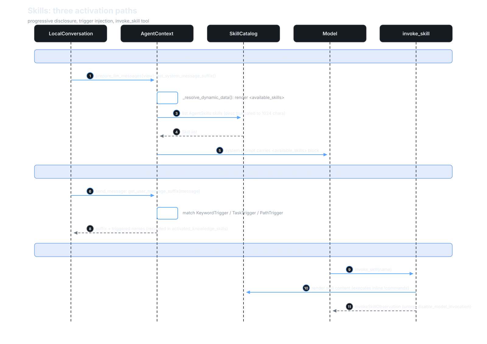
Start here: skills/skill.py:Skill, skills/trigger.py,
context/agent_context.py:get_system_message_suffix.
2. Hooks
Claude-Code-style lifecycle hooks configured in hooks.json/HookConfig,
with three executor kinds (hooks/executor.py): command (subprocess —
HookEvent JSON on stdin, JSON decision on stdout), prompt (LLM judge
hook, using the conversation's current LLM via getter so it survives
switch_llm), and agent (a full sub-conversation: fresh Agent +
LocalConversation with hook_config=None — no recursion — restricted
tools, its own system prompt; the final response is parsed as the
decision).72 Hook failures fall open (default ALLOW,
executor.py:196-212) — a crashed judge never blocks the loop.73 Six
event types (hooks/types.py:12-17): PreToolUse, PostToolUse,
UserPromptSubmit, SessionStart, SessionEnd, Stop; decisions are
allow/deny with exit-code semantics (HookResult.should_continue).74
HookEventProcessor (hooks/conversation_hooks.py:50) wraps on_event,
so hooks intercept the stream: PreToolUse deny marks the action blocked
and the batch emits UserRejectObservation(rejection_source="hook");
PostToolUse never blocks; UserPromptSubmit deny blocks the message
(and can inject additional_context); Stop deny flips FINISHED back
to RUNNING.75 Async hooks in PreToolUse cannot block (warn +
background).76 HookMatcher matches per event type with optional
tool-name patterns (config.py:121).77
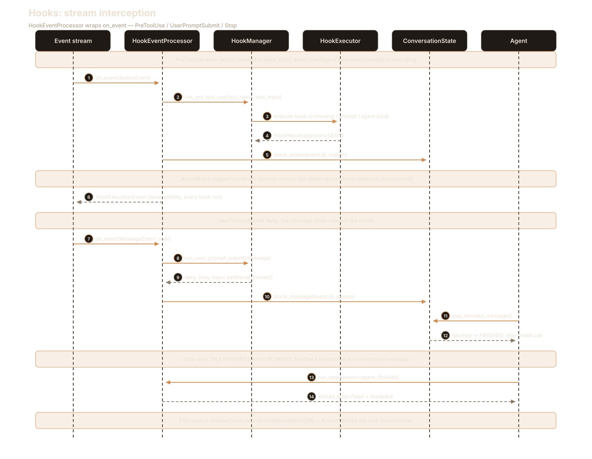
Start here: hooks/manager.py:HookManager,
hooks/conversation_hooks.py:50, hooks/config.py:HookDefinition.
3. Plugins
Claude-Code-compatible bundles: skills + hooks + MCP servers + agents +
slash commands in one package (plugin/plugin.py:36).78 Commands
become keyword-triggered skills (plugin.py:get_all_skills:104) — there
is no standalone slash-command dispatcher anywhere in the SDK; /goal is
a loop driver, not a command registry (verified by absence: commands/
dirs exist only inside plugins).79
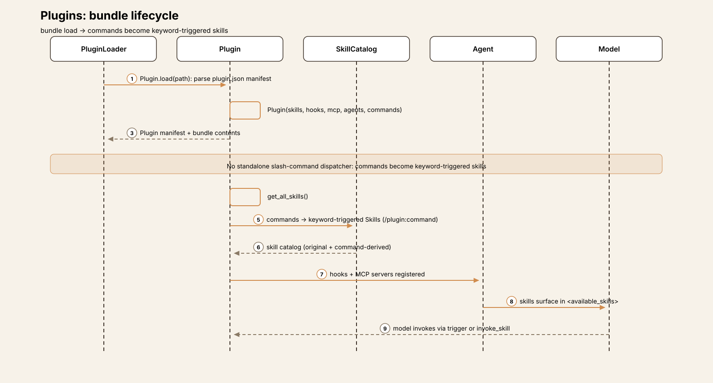
Start here: plugin/plugin.py:Plugin, plugin/loader.py.
4. MCP servers
The SDK owns a flat server map (mcp/config.py:MCPServer:497); FastMCP is
built only at the FastMCP boundary (mcp/utils.py:_prepare_mcp_config).80
MCPClient (async) bridges sync/async callers. Servers are configured
directly, declared by skills (repo skills only), or bundled in plugins;
.mcp.json's {"mcpServers": …} wrapper is unwrapped at the v4→v5
migration boundary.81
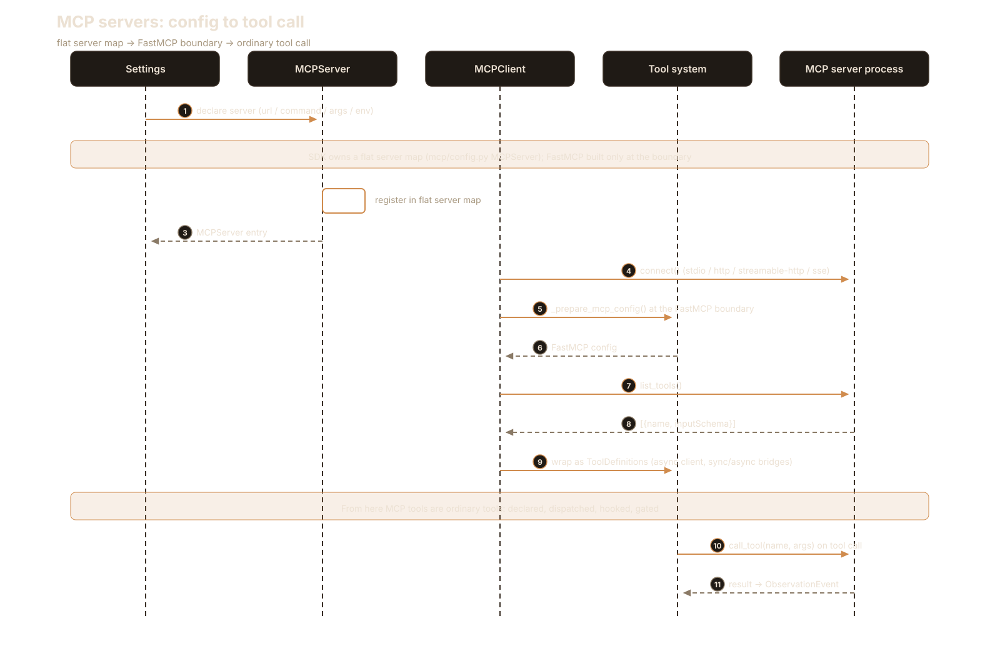
Start here: mcp/config.py:MCPServer, mcp/client.py:MCPClient.
5. Sub-agent definitions
Markdown frontmatter defining whole agents: own tools, skills, MCP
config, hooks, condenser, confirmation policy, permission mode, max
iterations and budget caps (subagent/schema.py:AgentDefinition:198).63
Delegation goes through DelegateExecutor, which spawns full
LocalConversation sub-conversations; SubAgentScope
(subagent/scope.py:25) narrows the tool set per delegation; the
task_tool_set exposes delegation to the model; TaskManager tracks tasks
with resume.64
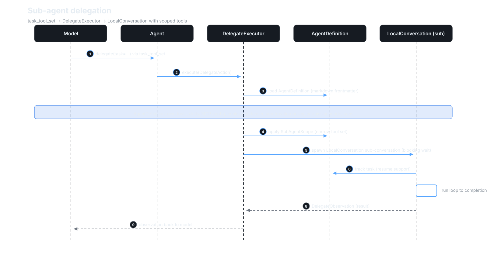
Start here: subagent/schema.py:AgentDefinition,
openhands-tools/.../delegate/impl.py:DelegateExecutor.
6. Marketplace
A registry of plugin marketplaces with resolution and prefetch
(marketplace/registry.py:MarketplaceRegistry:79) — the distribution
layer for plugin bundles.82
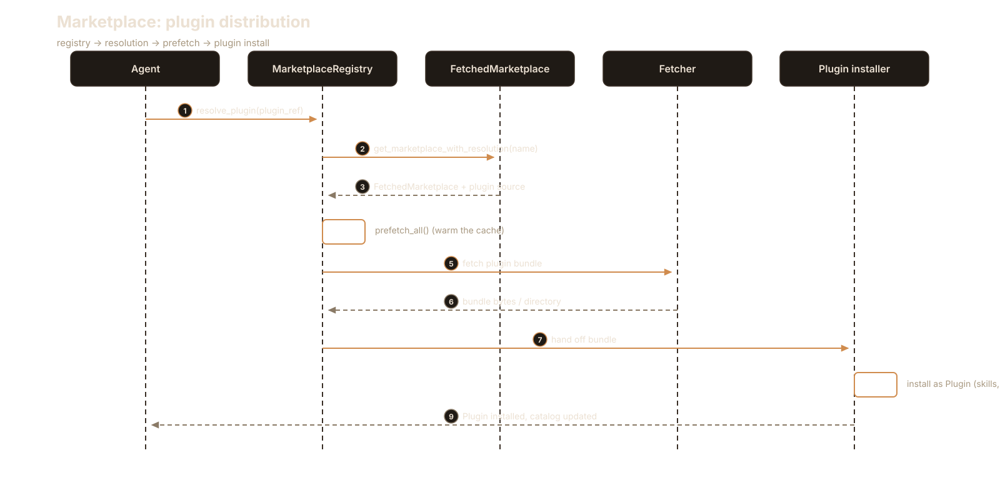
Start here: marketplace/registry.py:MarketplaceRegistry.
7. Extensions installation
Fetch from local, git, or GitHub sources
(extensions/fetch.py:parse_extension_source), then the
install/enable/disable/update lifecycle with a metadata session
(extensions/installation/manager.py:InstallationManager:29).83
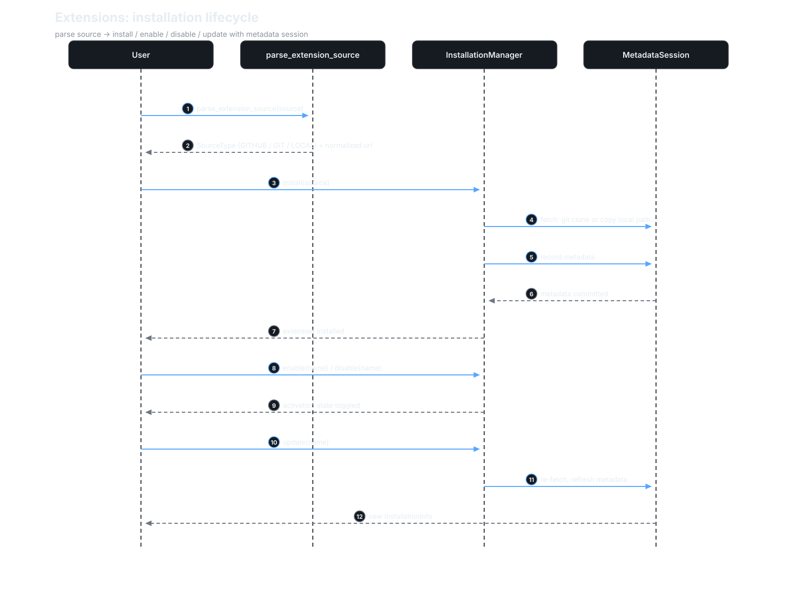
Start here: extensions/installation/manager.py:InstallationManager.
8. Automation
The SDK side is deliberately thin: observability context — tags and kwargs
for automation-dispatched conversations
(automation/__init__.py:automation_conversation_kwargs:126).67
Scheduling and dispatch live in the separate OpenHands/automation repo.
If you come from Goose's recipes, recalibrate: OpenHands keeps the
scheduler out of the harness.
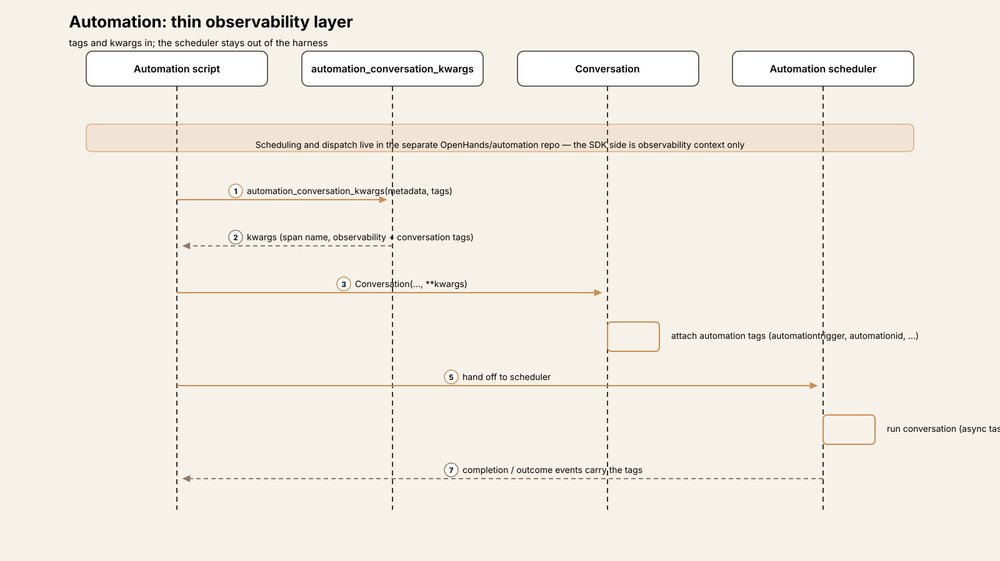
Start here: sdk/automation/__init__.py.
9. Critic
Pluggable quality scoring wired into loop termination — see The critic
and iterative refinement above.
CriticBase.evaluate(events, git_patch) -> CriticResult
(critic/base.py:83); per-action scoring during dispatch via
critic_mixin.py; refinement injected at _ActionBatch.finalize.313334
Start here: critic/base.py:CriticBase.
10. Condenser
Pluggable context compaction: CondenserBase.condense(view, agent_llm) ->
View | Condensation (context/condenser/base.py:16) —
LLMSummarizingCondenser (rolling summary), PipelineCondenser,
NoOpCondenser — triggered proactively (handles_condensation_requests)
or reactively on context-window/malformed-history errors via
CondensationRequest events.60
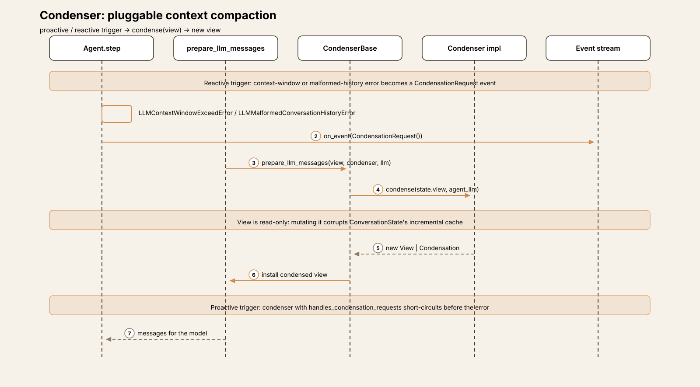
Start here: context/condenser/base.py:CondenserBase.
11. LLM router
RouterLLM (llm/router/base.py:28) subclasses LLM, holds
llms_for_routing: dict[str, LLM], and per completion select_llm(messages)
picks the active model and delegates (__getattr__ falls back to the
first).84 Implementations: MultimodalRouter (image-bearing turns go to
a vision-capable model), RandomRouter. Route-aware runtime metadata feeds
the condenser's token thresholds.85 Alongside it, the switch_llm /
classify_and_switch_llm builtin tools let the agent swap its own model
mid-run — routing by policy, switching by agency.86
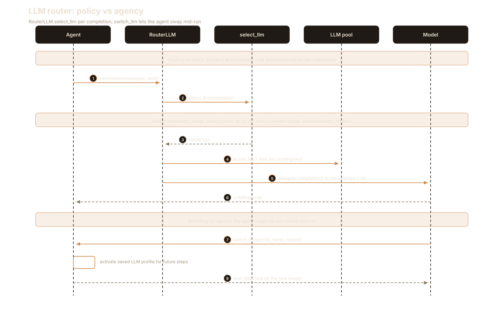
Start here: llm/router/base.py:RouterLLM.
12. Agent server and ACP
The agent-server is the deployment substrate: REST/WebSocket API,
conversation orchestration, EventService pub/sub fan-out, leases,
Docker runtime provisioning (openhands-agent-server/).6 ACPAgent
(agent/acp_agent.py:1714, ~4,700 lines) inverts the harness: it hosts an
external ACP server (Claude Code, Codex, Gemini CLI) as the loop, with
the SDK as adapter.66
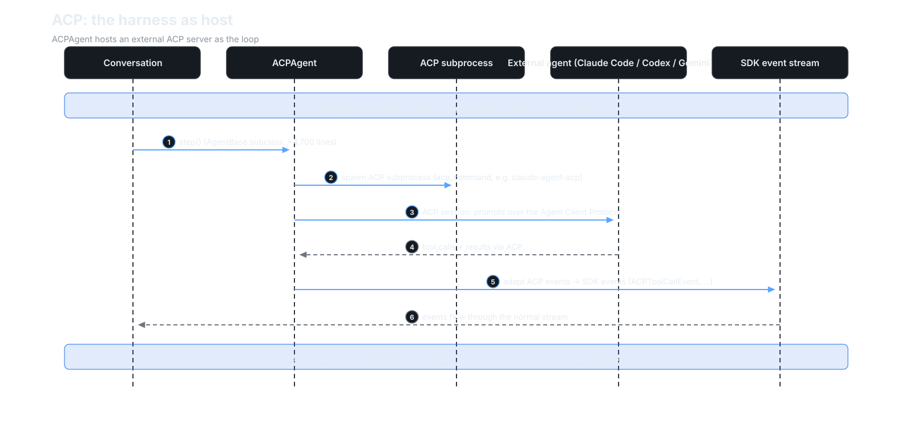
Start here: agent_server/event_service.py:EventService,
agent/acp_agent.py:1714.
Deliberate omissions
OpenHands ships no git-level safety net — no auto-commit, no stash, no
session undo. The git module is read-only helpers plus cached clones
for extensions; the only undo anywhere is per-file undo_edit in the
file editor (verified: every commit|undo|stash hit in sdk/git/*.py is
a read-only history helper or a checkout/reset on a cached extension
clone, never the user's workspace).87
Contrast Aider, whose git auto-commit plus /undo is the safety model.
There is no OS sandbox in the loop — no Seatbelt, no seccomp, no
bubblewrap, no Landlock (grep over openhands-sdk/ and openhands-tools/
returns zero hits);88 sandboxing is a deployment concern handled by the
agent-server's Docker runtimes. Contrast Codex, whose four-layer sandbox
stack sits inside the harness. There is no standalone slash-command
dispatcher, no recipes-as-programs (Goose), no repo-map (Aider), no
proto-bus bridge (Cline) — though ACP host mode is arguably the bridge's
inverse: instead of embedding the harness in the IDE, the harness embeds
other harnesses.
Read the omissions as the SDK thesis: OpenHands is infrastructure for building agents, not an agent product with opinions. Safety nets, sandboxes, and schedulers are the deployer's job — the SDK gives you the stream, the hooks, and the confirmation policy to build them with.
Comparison matrix row
| # | Dimension | OpenHands (v1.53.0) |
|---|---|---|
| 1 | Agent loop | Event-sourced; LocalConversation._run → Agent.step → pure classify_response; max_iteration_per_run 500; stop hooks can veto FINISHED 18192026 |
| 2 | Tool system | Spec/registry split; SDK never imports openhands-tools; Pydantic validation; parallel batches in original order 84754 |
| 3 | Model providers | LiteLLM; Chat Completions + Responses API; per-completion RouterLLM; agent self-swaps via switch_llm 40558486 |
| 4 | Prompt construction | Cached incremental view with enforced invariants; <available_skills> progressive disclosure 373815 |
| 5 | Memory/session | JSONL EventLog per event; pluggable condensers; server base_state.json resume; no cross-session recall 4960 |
| 6 | Reasoning/planning | Critic + iterative refinement gates termination; /goal LLM judge loop; sub-agent frontmatter defs 343063 |
| 7 | Extensibility | Skills, 3-kind hooks, plugins, MCP, sub-agents, marketplace, extensions, condenser, router, critic — 12 axes 707278 |
| 8 | Interfaces | SDK / agent-server REST+WS / ACP host mode / TS client; all consume the event stream 666 |
| 9 | Failure handling | Tenacity retries; condensation recovery; stuck detector; corrective nudges; hook fail-open 56606173 |
| 10 | Security model | Risk labels + confirmation policy + defense-in-depth rails; no OS sandbox in the loop 445888 |
Endnotes
All notes are VERIFIED against v1.53.0
(54daf056bd863bb46f922a2fe9324dd736b37ff6) unless marked DOCS; line
anchors and file paths re-checked on 2026-10-07.
GH = https://github.com/OpenHands/software-agent-sdk/blob/54daf056bd863bb46f922a2fe9324dd736b37ff6/.
-
Scope correction, VERIFIED via GitHub API 2026-10-05:
OpenHands/OpenHandsat tagv1.24.0resolves to the same SHA (7dc6805406ea3c76cb4a3ce407c3c72d481b0ac6) asAll-Hands-AI/OpenHands(org rename), and its README describes "Agent Canvas — the self-hosted developer control center for coding agents and automations. Run OpenHands, Claude Code, Codex, Gemini, or any ACP-compatible agent." The agent harness under analysis isOpenHands/software-agent-sdk("A clean, modular SDK for building AI agents with OpenHands V1"), tagv1.53.0, released 2026-10-05. ↩ -
ConversationStateholds events; the model input comes from a cached, incrementally maintained view — see GH…/sdk/context/view/view.py andprepare_llm_messages(state.view, condenser, llm)in GH…/sdk/agent/utils.py#L564. ↩ -
Loop:
LocalConversation._run(GH…/conversation/impl/local_conversation.py#L1917,while True:at L1935) →Agent.step(GH…/sdk/agent/agent.py#L693) →classify_response(GH…/sdk/agent/response_dispatch.py#L54). ↩ -
HookEventProcessor(GH…/sdk/hooks/conversation_hooks.py#L50) wraps theon_eventcallback; hooks are an event-stream interceptor. ↩ -
CriticBase.evaluate(events, git_patch) -> CriticResult(GH…/sdk/critic/base.py#L83); iterative refinement at GH…/sdk/agent/agent.py#L399 and L647-L648. ↩ -
Agent-server: REST/WebSocket API, conversation orchestration, event service with pub/sub fan-out, leases, Docker runtime provisioning — see
openhands-agent-server/(GH… tree),EventServicein GH…/event_service.py. ↩↩↩ -
Monorepo layout and per-package sizes (Python lines incl. blanks/comments, measured 2026-10-05 at the pinned SHA):
openhands-sdk/303 files / ~77k lines,openhands-tools/93 / ~17k,openhands-workspace/14 / ~3k,openhands-agent-server/89 / ~33k. ↩ -
Toolas a wire-contract spec: GH…/sdk/tool/spec.py#L12 (class Tool(BaseModel)); runtime resolution via GH…/sdk/tool/registry.py (register_tool,resolve_tool); the SDK package never importsopenhands-tools(dependency direction enforced by design, per thetool/defaults.pydocstring). ↩↩↩↩ -
EventType(GH…/sdk/event/types.py#L4);SourceTypeat L8. ↩ -
Event tree:
parent_id,ROOT_PARENT_ID = "__root__"(GH…/sdk/event/types.py#L10). ↩ -
Eventbase (GH…/sdk/event/base.py#L20);LLMConvertibleEventat L75;ActionEvent(GH…/llm_convertible/action.py#L24, fields includesecurity_riskandcritic_result);MessageEvent(GH…/llm_convertible/message.py#L25);ObservationBaseEvent/ObservationEvent(GH…/llm_convertible/observation.py#L17 / L32),UserRejectObservationat L86,AgentErrorEventat L138;SystemPromptEvent(GH…/llm_convertible/system.py#L12). ↩ -
Non-LLM events:
Condensation/CondensationRequest/CondensationSummaryEvent(GH…/sdk/event/condenser.py);ConversationStateUpdateEvent(GH…/sdk/event/conversation_state.py);HookExecutionEvent(GH…/sdk/event/hook_execution.py);LLMCompletionLogEvent,StreamingDeltaEvent(GH…/sdk/event/streaming_delta.py),TokenEvent(GH…/sdk/event/token.py),InterruptEvent/PauseEvent(GH…/sdk/event/user_action.py),ACPToolCallEvent(GH…/sdk/event/acp_tool_call.py). ↩ -
Producers: agent emits via
on_event; tools produce observations; hooks produceHookExecutionEvents; user actions produce interrupt/pause; the condenser produces condensation events — see the trace inAgent._step(GH…/sdk/agent/agent.py#L706) andLocalConversation._on_event. ↩ -
Cached incremental view:
prepare_llm_messages(state.view, condenser, llm)at GH…/sdk/agent/utils.py#L564 (overloads L573/L581); design comment referencing issue #3053 in the view code. ↩ -
View invariants: observation uniqueness, tool-call matching, batch/tool-loop atomicity — enforced by view properties in GH…/sdk/context/view/properties/. ↩↩
-
PreToolUse interception: deny marks the action blocked via
state.block_action(event.id, reason);_ActionBatch.preparepartitions it out and emitsUserRejectObservationwithrejection_source="hook"instead of executing — see GH…/sdk/hooks/conversation_hooks.py#L50 and_ActionBatchin GH…/sdk/agent/agent.py#L380. ↩ -
StreamContext(GH…/sdk/agent/stream_context.py) mints event IDs for streamed items;_maybe_emit_vllm_tokensemitsTokenEventwhen the provider returns token IDs (return_token_idsin litellm_extra_body). ↩ -
LocalConversation.run/arun(GH…/conversation/impl/local_conversation.py#L1902 / L2093);_run/_arunat L1917 / L2114;while True:at L1935 / L2157. ↩↩ -
Stop-hook veto on FINISHED: GH…/local_conversation.py#L1952-L1975 (deny →
logger.info("Stop hook denied agent stopping"), feedback injected as environment message withACP_STOP_HOOK_FEEDBACK_PREFIX, status flipped back to RUNNING); documented WS-FINISHED race in the repo AGENTS.md: clients must treat FINISHED as a hint. ↩↩↩ -
Termination conditions: PAUSED/STUCK break at GH…/local_conversation.py#L1938-L1943; WAITING_FOR_CONFIRMATION break at L2011-L2016; budget (
_budget_exceeded_detail→MaxBudgetReached) at L2018-L2023;max_iteration_per_run(default 500 at L219) →ConversationErrorEvent(code="MaxIterationsReached")at L2024-L2045. ↩↩ -
conversation.interrupt()cancels the tracked_arun_task;asyncio.CancelledErrorpropagates through the LLM stream → agent step → loop; status → PAUSED withInterruptEvent(policy text in repo AGENTS.md). ↩ -
Agent.step/astep(GH…/sdk/agent/agent.py#L693 / L898); internal_stepat L706. ↩ -
prepare_llm_messages(state.view, condenser, llm)(GH…/sdk/agent/utils.py#L564). ↩ -
llm.generate(..., add_security_risk_prediction=True)inAgent._step(GH…/sdk/agent/agent.py#L706). ↩ -
Error paths in
_step: malformed function call → user-role errorMessageEvent; content-policy violation → deterministic nudge;LLMMalformedConversationHistoryError→ condensation recovery;LLMContextWindowExceedError→CondensationRequestevent (if the condenser handles requests) else raise. ↩ -
classify_response— pure function, decision priority TOOL_CALLS > CONTENT > REASONING_ONLY > EMPTY: GH…/sdk/agent/response_dispatch.py#L54 (priority documented L54-L66; "pure: no side effects, no logging, no mutation"). ↩↩↩ -
_handle_tool_calls→ per-call_get_action_event(GH…/sdk/agent/agent.py#L1311); parallel execution viaParallelToolExecutor(GH…/sdk/agent/parallel_executor.py,tool_concurrency_limit); async path runs each tool in its own thread (run_in_executor+asyncio.gather). ↩ -
CONTENT→_handle_content_response(emitMessageEvent, status=FINISHED, "awaits user input");REASONING_ONLY/EMPTY→ corrective nudge withsource="environment"— see GH…/sdk/agent/response_dispatch.py. ↩↩ -
_ActionBatch.finalize(GH…/sdk/agent/agent.py#L380):FinishTooltruncates the batch; iterative-refinement check at L399/L647-L648 injects a followup user message instead of FINISHED. ↩ -
GoalController(GH…/sdk/conversation/goal/controller.py#L78); LLM judge at GH…/sdk/conversation/goal/judge.py; drivers: syncrun_goal(GH…/sdk/conversation/goal/runner.py) or async agent-server task. ↩↩↩↩ -
CriticBase.evaluate(events, git_patch) -> CriticResult(GH…/sdk/critic/base.py#L83); modesfinish_and_message(default) vsall_actions. ↩↩ -
Implementations:
AgentFinishedCritic,EmptyPatchCritic,PassCritic, and the API critic with rubric taxonomy in GH…/sdk/critic/impl/api/. ↩ -
Per-action critic scoring during dispatch:
_get_action_eventcalls_evaluate_with_criticwhen_should_evaluate_with_critic(action)(GH…/sdk/agent/critic_mixin.py); the result rides on theActionEvent.critic_resultfield (GH…/sdk/event/llm_convertible/action.py#L24). ↩↩ -
Iterative refinement at finalize: GH…/sdk/agent/agent.py#L399 (
should_continue, followup = check_iterative_refinement(...)) and L647-L648 (the check itself); score below threshold → followup user-roleMessageEventinjected, loop continues instead of FINISHED. ↩↩↩↩ -
LocalConversation.send_message(GH…/conversation/impl/local_conversation.py#L1807): resets FINISHED/STUCK to IDLE;UserPromptSubmithooks viaHookEventProcessor.on_event; skill-trigger matching viaagent_context.get_user_message_suffix(L1845), names recorded instate.activated_knowledge_skills(L1848). ↩ -
Blocked-message handling in
_step:state.pop_blocked_message→ FINISHED, skip processing — the hook veto lands before any model call. ↩ -
prepare_llm_messages(state.view, condenser, llm): GH…/sdk/agent/utils.py#L564. ↩↩↩ -
AgentContext._resolve_dynamic_data()renders<available_skills>into the system-prompt suffix (GH…/sdk/context/agent_context.py#L360-L454); AgentSkills descriptions truncated to 1024 chars per spec (GH…/sdk/skills/skill.py#L234-L235,MAX_DESCRIPTION_LENGTH = 1024). ↩↩ -
SDK builtins (
finish,think,switch_llm,classify_and_switch_llm,invoke_skill,vision_inspect) in GH…/sdk/tool/builtins/; default exec set (terminal,file_editor,task_tracker) at GH…/sdk/tool/defaults.py#L27. ↩ -
LLMwrapslitellm.completion/litellm.acompletion(GH…/sdk/llm/llm.py#L76-L80); Chat Completions vs Responses API dispatch at L1673 (uses_responses_api()). ↩↩↩ -
add_security_risk_prediction=Truein thellm.generatecall insideAgent._step(GH…/sdk/agent/agent.py#L706). ↩ -
_get_action_event(GH…/sdk/agent/agent.py#L1311): argument parsing →normalize_tool_call→ tool lookup → Pydantic validation → security-risk extraction → critic evaluation →ActionEventemitted viaon_event. ↩ -
state.block_action(event.id, reason)on PreToolUse deny; see GH…/sdk/hooks/conversation_hooks.py#L50. ↩ -
_requires_user_confirmation(GH…/sdk/agent/agent.py#L1130);ConfirmationPolicy(AlwaysConfirm / NeverConfirm / ConfirmRisky(threshold)) at GH…/sdk/security/confirmation_policy.py;SecurityAnalyzerBase(GH…/sdk/security/analyzer.py#L15) withLLMSecurityAnalyzer,PolicyRailSecurityAnalyzer(GH…/sdk/security/defense_in_depth/policy_rails.py),EnsembleSecurityAnalyzer,GraySwanAnalyzer(GH…/sdk/security/grayswan/). ↩↩↩ -
Without a configured analyzer, risk is always UNKNOWN and the LLM's own
security_riskfield is ignored: GH…/sdk/agent/agent.py#L1173-L1198. ↩ -
Confirmation gate →
WAITING_FOR_CONFIRMATION; nextrun()executes pending actions as implicit confirmation (GH…/sdk/conversation/impl/local_conversation.py#L1985-L1990);FinishAction/ThinkActionalone never confirm. ↩↩ -
_execute_actions/_aexecute_actions->_ActionBatch.prepare(truncate atFinishTool; partition hook-blocked intoUserRejectObservation(rejection_source="hook"); execute the rest viaParallelToolExecutorbounded bytool_concurrency_limit;ObservationEvents emitted in original call order) — see GH…/sdk/agent/agent.py#L380-L411 and GH…/sdk/agent/parallel_executor.py. ↩↩ -
Tool errors become
AgentErrorEvent(tool raisedValueError);fix_malformed_tool_argumentsrepairs malformed args before validation fails — seeAgent._execute_action_event(GH…/sdk/agent/agent.py#L1468). ↩ -
EventLog— thread/process-safe, per-event JSONL under the conversation directory: GH…/sdk/conversation/event_store.py#L34;FileStorebackends (local/memory/cache) in GH…/sdk/io/; agent-server persistsmeta.json/base_state.json/ events underconversations/<id>/and resumes frombase_state.json. ↩↩↩ -
EventServicepub/sub fan-out to REST/WebSocket clients — seeopenhands-agent-server/(GH… tree);StreamContextslot-minting: GH…/sdk/agent/stream_context.py. ↩ -
SDK builtins in GH…/sdk/tool/builtins/ (
finish.py,think.py,switch_llm.py,classify_and_switch_llm.py,invoke_skill.py,vision_inspect.py). ↩ -
Default exec tools at GH…/sdk/tool/defaults.py#L27 (
terminal,file_editor,task_tracker);browser_tool_setoptional onenable_browser;task_tool_setfor delegation;switch_llmalways appended. ↩ -
Tool implementations in GH… tree openhands-tools/: terminal, file_editor, task_tracker, browser_use, glob, grep, apply_patch, delegate, task, workflow, ask_oracle, tom_consult, gemini, planning_file_editor, preset, utils. ↩
-
ToolDefinitionwith Pydanticaction_typeandToolExecutorreturning anObservation;is_usable()environment checks filtered vialist_usable_tools— see GH…/sdk/tool/registry.py. ↩↩ -
Full model strings at the boundary;
get_llm_providerparsing in GH…/sdk/llm/utils/litellm_provider.py (LLMProvider). ↩↩ -
Non-native function-calling mixin: GH…/sdk/llm/mixins/non_native_fc.py; tenacity retries (
RetryMixin) with hard/idle timeouts inside the attempt; error taxonomy in GH…/sdk/llm/exceptions/. ↩↩ -
Series-internal comparison: Goose's provider trait requires only
stream()(see the Goose installment); OpenHands'LLMsurface (generate/completion/responses, streaming, retries, routing, telemetry, metrics) is strictly richer — graded as a comparative observation across two pinned trees, not a single-source claim. ↩ -
Defense in depth: shell-semantics parsing and pattern rails in GH…/sdk/security/defense_in_depth/; ToolShield MCP safety experiences via GH…/sdk/security/toolshield_helpers.py. ↩↩
-
Sandbox-as-deployment: Docker runtime provisioning in GH…/openhands-agent-server/openhands/agent_server/docker_runtime/; no sandbox in the SDK loop itself (see 88). ↩↩
-
CondenserBase.condense(view, agent_llm) -> View | Condensation(GH…/sdk/context/condenser/base.py#L16);LLMSummarizingCondenser,PipelineCondenser,NoOpCondenserin GH…/sdk/context/condenser/; proactive viahandles_condensation_requests, reactive viaCondensationRequestonLLMContextWindowExceedError/LLMMalformedConversationHistoryError. ↩↩↩↩ -
Stuck detection: GH…/sdk/conversation/stuck_detector.py (repeating action-observation loops, action-error streaks with one corrective nudge, monologues, alternating patterns → STUCK). ↩↩
-
Per-run cost budget:
_budget_exceeded_detail()→MaxBudgetReached(GH…/sdk/conversation/impl/local_conversation.py#L2018-L2023);conversation.interrupt()cancels the run task →InterruptEvent, status PAUSED. ↩ -
AgentDefinition(GH…/sdk/subagent/schema.py#L198): tools, skills, MCP config, hooks, condenser, confirmation policy, permission mode, max iterations/budget caps — loaded from markdown frontmatter;DelegateAction/DelegateExecutor(GH…/tools/delegate/definition.py#L16 / GH…/tools/delegate/impl.py#L33) spawn fullLocalConversationsub-conversations. ↩↩↩ -
SubAgentScope(GH…/sdk/subagent/scope.py#L25);task_tool_setexposes delegation to the model;TaskManager(inopenhands-tools/.../task/manager.py) tracks tasks with resume. ↩↩ -
Agent-server catalog registration:
conversation_service.py:_register_agent_definitions(GH…/openhands-agent-server/openhands/agent_server/conversation_service.py#L382). ↩ -
ACPAgent(GH…/sdk/agent/acp_agent.py#L1714, 4,681 lines):AgentBasesubclass delegating the whole loop to an external ACP server (Claude Code / Codex / Gemini CLI subprocesses). ↩↩↩ -
automation_conversation_kwargs(GH…/sdk/automation/init.py#L126): tags/kwargs for automation-dispatched conversations; scheduling and dispatch live in the separateOpenHands/automationrepo. ↩↩ -
Legacy microagent support: GH…/sdk/skills/skill.py#L960 (
~/.openhands/microagents/scanned as legacy);_load_legacy_openhands_skillat L448; legacy reference in GH…/sdk/context/agent_context.py#L97. ↩ -
Skill formats (
skill.py:178): AgentSkills-format always listed in<available_skills>with progressive disclosure; legacy OpenHands format — with triggers listed + trigger-injected, without triggers fully inlined into<REPO_CONTEXT>and always active. See GH…/sdk/skills/skill.py#L178 and GH…/sdk/context/agent_context.py#L339-L346. ↩ -
Three activation paths: (1) progressive disclosure via
AgentContext._resolve_dynamic_data()(GH…/sdk/context/agent_context.py#L360-L454); (2) trigger injection —KeywordTrigger/TaskTrigger/PathTrigger(GH…/sdk/skills/trigger.py#L19 / L29 / L39); (3)invoke_skillbuiltin tool (GH…/sdk/tool/builtins/invoke_skill.py#L60) rendering content with inline!commandexecution (GH…/sdk/skills/execute.pyrender_content_with_commands);disable_model_invocation=Trueforces trigger-only activation. ↩↩ -
Skill loading dirs (
~/.agents/skills/,~/.openhands/skills/, legacy~/.openhands/microagents/, repo.openhands/skills/and.agents/skills/, installed skills, plugin skills) — see GH…/sdk/skills/skill.py#L960; repo skills may bundle MCP servers (Skill.mcp_tools) and declareallowed_tools. ↩ -
Hook executor kinds — command / prompt / agent: GH…/sdk/hooks/executor.py; prompt hooks use the conversation's current LLM via getter (survives
switch_llm); agent hooks spin up a freshAgent+LocalConversationwithhook_config=None(no recursion), restricted tools, own system prompt — final response parsed as the decision. ↩↩ -
Fail-open:
_fall_open(GH…/sdk/hooks/executor.py#L196-L212, defaultHookDecision.ALLOW); "detectable asdecision == ALLOW and not success" at L48. ↩↩ -
Six hook event types: GH…/sdk/hooks/types.py#L12-L17 (
PRE_TOOL_USE,POST_TOOL_USE,USER_PROMPT_SUBMIT,SESSION_START,SESSION_END,STOP); allow/deny exit-code semantics,HookResult.should_continue(GH…/sdk/hooks/executor.py#L63). ↩ -
HookEventProcessor(GH…/sdk/hooks/conversation_hooks.py#L50): PreToolUse at L127 (deny →state.block_action), PostToolUse at L179 (never blocks), UserPromptSubmit at L244 (deny blocks message, can injectadditional_context), SessionStart/End at L325/L341, Stop viarun_stop(deny flips FINISHED → RUNNING). ↩ -
Async hooks in PreToolUse cannot block — warn + background: GH…/sdk/hooks/manager.py#L83-L88 ("async hook(s) that will run in background"). ↩
-
HookMatcherper event type with optional tool-name patterns: GH…/sdk/hooks/config.py#L121. ↩ -
Plugin(GH…/sdk/plugin/plugin.py#L36): Claude-Code-compatible bundles of skills + hooks + MCP servers + agents + commands; loader at GH…/sdk/plugin/loader.py. ↩↩ -
Commands become keyword-triggered skills:
plugin.py:get_all_skills(GH…/sdk/plugin/plugin.py#L104). Negative finding: no standalone slash-command dispatcher in the SDK —commands/dirs exist only inside plugins;/goalis a loop driver (30), not a command registry. Search scope:openhands-sdk/forregister_command|CommandRegistry|slash(case-insensitive): hits only in plugin code. ↩ -
MCPServer(GH…/sdk/mcp/config.py#L497); flat SDK-owned server map; FastMCP built only at the boundary —_prepare_mcp_config(GH…/sdk/mcp/utils.py#L167). ↩ -
MCPClient(async) with sync/async bridges: GH…/sdk/mcp/client.py;.mcp.json{"mcpServers": …}unwrapped at the v4→v5 migration boundary (repo AGENTS.md). ↩ -
MarketplaceRegistry(GH…/sdk/marketplace/registry.py#L79): plugin marketplace registry, resolution, prefetch. ↩ -
InstallationManager(GH…/sdk/extensions/installation/manager.py#L29): install/enable/disable/update lifecycle with metadata session;parse_extension_source(GH…/sdk/extensions/fetch.py) handles local/git/github sources. ↩ -
RouterLLM(GH…/sdk/llm/router/base.py#L28): subclassesLLM, holdsllms_for_routing: dict[str, LLM]; per-completionselect_llm(messages);__getattr__falls back to the first LLM. ↩↩ -
MultimodalRouter(GH…/sdk/llm/router/impl/multimodal.py#L13) routes image-bearing turns to a vision-capable model;RandomRouter(GH…/sdk/llm/router/impl/random.py#L11); route-aware runtime metadata feeds condenser token thresholds (agent.py: resolve_runtime_metadata). ↩ -
switch_llm/classify_and_switch_llmbuiltin tools: GH…/sdk/tool/builtins/switch_llm.py andclassify_and_switch_llm.py— the agent swaps its own model mid-run. ↩↩ -
No git-level safety net. Search scope (2026-10-05, pinned SHA): case-insensitive grep for
commit|undo|stashoveropenhands-sdk/openhands/sdk/git/*.pyandopenhands-tools/openhands/tools/**/. Inopenhands-toolsthe only undo isundo_edit(tools/file_editor/definition.py:26, also exposed byplanning_file_editor). Insdk/gitthe hits are read-only history helpers (git_commits.py,git_changes.py,git_diff.py) andcheckout/reset --hardon cached extension clones (cached_repo.py:108,:121) — none snapshot or restore the user's workspace. Commit guidance appears only as a static prompt section (GH…/sdk/context/prompts/sections/static.py#L227). ↩ -
No OS sandbox in the SDK. Search scope (2026-10-05, pinned SHA): grep for
seatbelt|seccomp|bubblewrap|landlock(case-insensitive) acrossopenhands-sdk/andopenhands-tools/: zero hits.openhands-sdk/openhands/sdk/security/contains analyzers and policy rails only. Sandboxing lives in deployment (agent-server Docker runtimes, 59). ↩↩↩